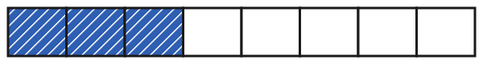
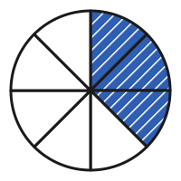
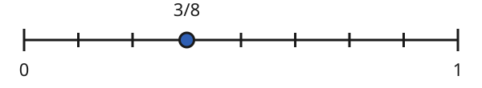

Brüche darstellen
Mit einem KI-Tutor lernen
Ein KI-Tutor erklärt dir diese Seite und hilft dir bei den Übungen. Wähl deinen Assistenten:
Mit Claude öffnen Mit ChatGPT öffnen Mit Mistral Vibe öffnen
Du nutzt dein eigenes Konto beim Anbieter. Der Assistent ist kein Angebot von lernapps.net: lernapps liefert nur Inhalte und Übungen. Die Wahl gilt für alle Seiten, nur auf diesem Gerät.
Einstieg
Eine Pizza ist rund, eine Tafel Schokolade ist ein Rechteck. Einen Teil davon kannst du aber immer mit einem Bruch beschreiben. Du weißt schon: Der Nenner sagt, in wie viele gleich große Teile das Ganze geteilt ist. Der Zähler sagt, wie viele dieser Teile gemeint sind.
Du kennst auch den Zahlenstrahl von den natürlichen Zahlen. Auch Brüche haben dort einen Platz.
Anschaulich erklärt
Hier siehst du dreimal denselben Bruch: drei Achtel, . Beim Streifen und beim Kreis ist das Ganze der ganze Streifen oder der ganze Kreis. Blau mit Streifenmuster sind die Teile, die gemeint sind.

Der Streifen hat 8 gleich große Teile, 3 davon sind blau.
Quelle: eigene Zeichnung. Lizenz: CC-BY-4.0.
Der Kreis hat 8 gleich große Stücke, 3 davon sind blau.
Quelle: eigene Zeichnung. Lizenz: CC-BY-4.0.Auf dem Zahlenstrahl ist das Ganze die Strecke von 0 bis 1. Auch sie ist in 8 gleich lange Abschnitte geteilt. Der Punkt liegt nach 3 Abschnitten, von der 0 aus gezählt.

Der Nenner zählt die Abschnitte zwischen den Strichen, nicht die Striche. Der Zähler sagt, wie viele Abschnitte du von der 0 aus gehst.
Quelle: eigene Zeichnung. Lizenz: CC-BY-4.0.Ausprobieren
Zeige am Streifen: Stelle mit − und + fünf Teile ein und färbe zwei davon blau. Dann ist es derselbe Bruch wie am Kreis oder am Zahlenstrahl, nur anders gezeichnet. Wenn du die Teilung änderst, werden alle Teile wieder weiß. Hier wird nichts geprüft.
Blau: 0 von 1. Das ist der Bruch 0/1.
Ein Streifen ist das Ganze. Du teilst ihn in 1 bis 10 gleich große Teile und färbst einige davon blau. Die Zahl aller Teile ist der Nenner, die Zahl der blauen Teile der Zähler. Beispiel: Ein Streifen aus 5 gleich großen Teilen, 2 davon blau, ist der Bruch 2/5 (zwei Fünftel).
Merke
Ein Bruch, drei Bilder
Am Streifen und am Kreis zählst du Teile. Am Zahlenstrahl zählst du Abschnitte zwischen den Strichen. Immer sagt der Nenner, in wie viele gleich große Teile das Ganze geteilt ist, und der Zähler, wie viele davon gemeint sind.
Zwei Fünftel auf dem Zahlenstrahl
Wo liegt auf dem Zahlenstrahl von 0 bis 1?
| Das Ganze | die Strecke von 0 bis 1 |
|---|---|
| Nenner | 5, also teilst du die Strecke in 5 gleich lange Abschnitte (6 Striche) |
| Zähler | 2, also gehst du 2 Abschnitte von der 0 aus |
| Punkt | beim zweiten Strich nach der 0 |
Übung
Übung
Lösung
3/5 richtige Antwort
Zwischen 0 und 1 liegen 5 gleich lange Abschnitte, das ist der Nenner. Der Punkt liegt nach 3 Abschnitten, das ist der Zähler.
4/6
Hier wurden die Striche gezählt. Der Nenner zählt aber die Abschnitte zwischen den Strichen.
4/5
Der Strich bei 0 wurde mitgezählt. Von der 0 aus gehst du Abschnitt für Abschnitt, die 0 selbst ist noch kein Abschnitt.
3/6
Der Zähler passt, aber der Nenner zählt Striche statt Abschnitte.
Am Zahlenstrahl zählst du Abschnitte, nicht Striche. Der Nenner ist die Zahl aller Abschnitte zwischen 0 und 1, der Zähler die Zahl der Abschnitte bis zum Punkt.
Mehr dazu:
Übung
Lösung
5/6 richtige Antwort
Der Kreis hat 6 gleich große Stücke, das ist der Nenner. Fünf davon sind blau, das ist der Zähler.
6/5
Zähler und Nenner sind vertauscht. Unten steht die Zahl aller Stücke.
1/6
Das ist das weiße Stück. Gefragt ist nach den blauen Stücken.
5/11
Der Nenner zählt alle Stücke des Kreises, blaue und weiße zusammen, und nicht mehr.
Der Nenner zählt alle gleich großen Stücke des Kreises, der Zähler die blauen.
Mehr dazu:
Übung
Lösung
Richtige Antwort: 1/2 – ein Halbes; 3/4 – drei Viertel; 2/3 – zwei Drittel; 5/8 – fünf Achtel
Der Nenner gibt dem Bruch seinen Namen (Halbe, Drittel, Viertel, Achtel). Der Zähler sagt, wie viele davon gemeint sind.
Mehr dazu:
Übung
Drei Beispielaufgaben, jede mit ihrer Lösung:
Aufgabe Nr. 1
Ein Zahlenstrahl von 0 bis 1 hat 6 Striche, den Strich bei 0 und den Strich bei 1 mitgezählt. Die Striche teilen ihn in gleich lange Abschnitte. Welche Zahl ist der Nenner? Gib nur die Zahl ein.
Tipp
Male dir 3 Striche auf. Wie viele Abschnitte liegen dazwischen?
Lösung
- Zwischen zwei Strichen liegt ein Abschnitt. Bei 6 Strichen gibt es deshalb einen Abschnitt weniger als Striche.
- Es sind 5 Abschnitte. Das ist der Nenner.
Richtige Antwort: 5
Aufgabe Nr. 2
Ein Zahlenstrahl von 0 bis 1 hat 4 Striche, den Strich bei 0 und den Strich bei 1 mitgezählt. Die Striche teilen ihn in gleich lange Abschnitte. Welche Zahl ist der Nenner? Gib nur die Zahl ein.
Tipp
Male dir 3 Striche auf. Wie viele Abschnitte liegen dazwischen?
Lösung
- Zwischen zwei Strichen liegt ein Abschnitt. Bei 4 Strichen gibt es deshalb einen Abschnitt weniger als Striche.
- Es sind 3 Abschnitte. Das ist der Nenner.
Richtige Antwort: 3
Aufgabe Nr. 3
Ein Zahlenstrahl von 0 bis 1 hat 11 Striche, den Strich bei 0 und den Strich bei 1 mitgezählt. Die Striche teilen ihn in gleich lange Abschnitte. Welche Zahl ist der Nenner? Gib nur die Zahl ein.
Tipp
Male dir 3 Striche auf. Wie viele Abschnitte liegen dazwischen?
Lösung
- Zwischen zwei Strichen liegt ein Abschnitt. Bei 11 Strichen gibt es deshalb einen Abschnitt weniger als Striche.
- Es sind 10 Abschnitte. Das ist der Nenner.
Richtige Antwort: 10